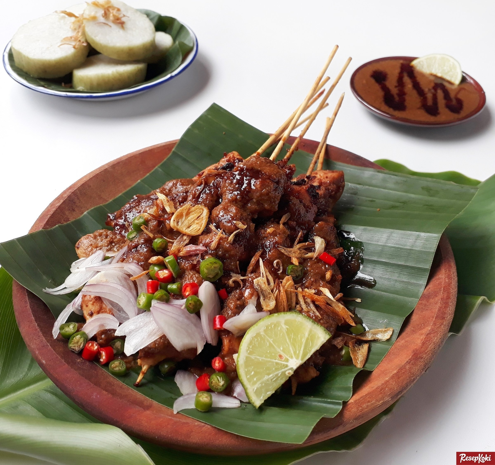

Kembali ke Index

Sate memang mudah dibeli, tetapi mungkin Anda iseng ingin membuatnya sendiri di rumah. Cobalah resep masakan indonesia khas madura yang satu ini.
Bahan |
Bumbu |
Cara Membuat
Bahan:
- 250g fillet ayam, dipotong dadu, kemudian tusukkan ke tusukan sate
- 1 buah jeruk nipis yang telah diiris
- 100ml minyak goreng
- 3 butir bawang merah, diiris tipis
- 5 sdm kecap manis
- nasi putih atau bisa diganti lontong secukupnya
Bumbu Kacang:
- 3 butir bawang putih
- 4 butir bawang merah
- 100g kacang tahan, digoreng
- 2 butir kemiri
- garam secukupnya
- 150ml air kaldu ayam
- 2sdm minyak goreng
Sambal:
- cabe merah kecil 15 buah
- bawang putih 4 siung
- garam secukupnya
- minyak goreng secukupnya
Cara membuat:
- Pembuatan bumbu kacang, haluskan bawang putih & merah, kacang tanah, garam, dan juga kemiri. Tumis bumbu kacang hingga tercium bau harum, kemudian masukkan air kaldu dan selanjutnya masak sampai mengental lalu angkat. Sisihkan.
- Selanjutnya, campurkan 2 sendok makan mumbu kacang dengan ditambah 2 sendok makan kecap manis, lalu celupkan sate, kemudian bakar hingga setengah matang. Angkat lalu gulingkan lagi dalam bumbu, terus bakar lagi hingga matang, angkat.
- Untuk sambal bawang, tumis bawang putih sampai setengah matang lalu angkat. Selanjutnya campur bawang putih ditambah juga cabe merah kecil dan garam, haluskan
atas
Kembali ke Index